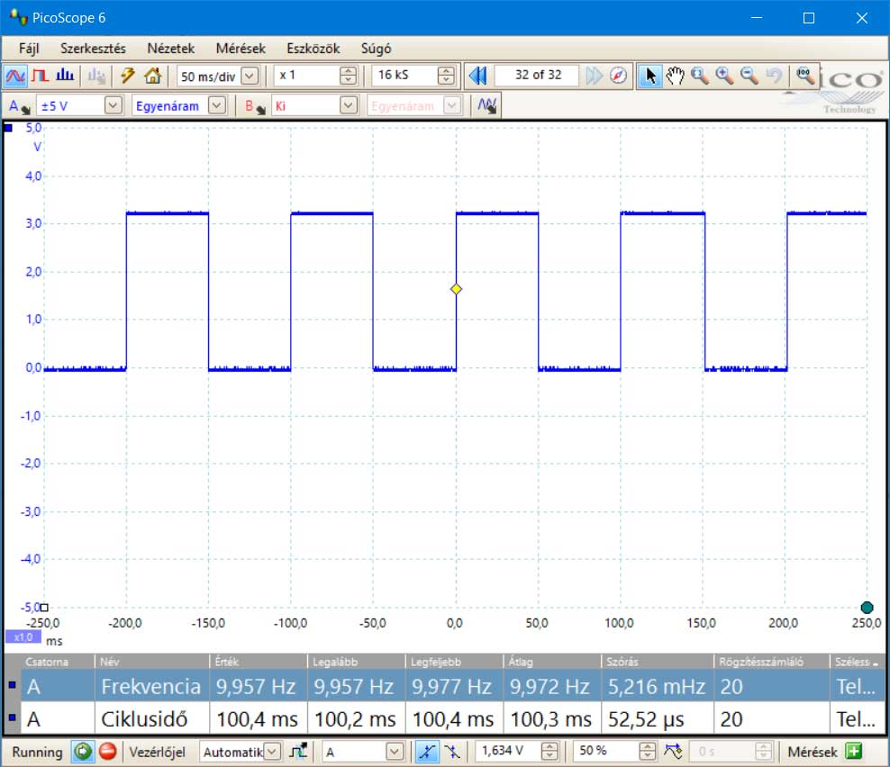

Raspberry Pi fényjátékok
Út a villany felkapcsolásától a jelzőlámpa algoritmus kódolásáig.
"Kódból vagyunk ..."

Út a villany felkapcsolásától a jelzőlámpa algoritmus kódolásáig.
"Kódból vagyunk ..."
00_LedAlap.py fájl:
#Led kigyújtása
#A GPIO modul behívása
import RPi.GPIO as GPIO
import time
#Figyelmezetetések kikapcsolása
GPIO.setwarnings(False)
#tüskék fizikai kiosztás szerint
GPIO.setmode(GPIO.BOARD)
#tüskék alaphelyzet
GPIO.cleanup()
#16-os tüske kimenet
GPIO.setup(36, GPIO.OUT)
#Led bekapcsolása
#GPIO.output(36, GPIO.HIGH)
GPIO.output(36, 1)
#GPIO.output(36, True)
print("Pin_36 világít. Kilép Ctrl-C")
try:
while True:
time.sleep(1)
except KeyboardInterrupt:
print("Pinek lekapcsolva")
GPIO.cleanup()
01_LedKigyujt.py fájl részlete:
#A program paraméterei: #Pin definiálása pin = 36 onOff = 1 #A "pin" tüske kimenet GPIO.setup(pin, GPIO.OUT) #Led kigyújt GPIO.output(pin, onOff)
Logikai változó "billegtetése": onOff = not
onOff
Várakozás "Tv" ideig: time.sleep(Tv)
02_LedVillog.py fájl részlete:
#Paraméterek
pin = 36 #Pin definiálása
T = 0.1 #Villogás periódusideje
Tv = T/2
onOff = 1
#36-es tüske kimenet
GPIO.setup(pin, GPIO.OUT)
print("Pin_%s villog. Kilép Ctrl-C" %(pin))
try:
#Végtelen ciklus
while True:
GPIO.output(pin, onOff)
onOff = not onOff
time.sleep(Tv)
except KeyboardInterrupt:
print("Pinek lekapcsolva")
GPIO.cleanup()
Periódus idő: Egy periódus lefutásának ideje: T= 100ms = 0,1s
Ferekvencia: Egy másodperc alatt mennyi periódus zajlik le:
f= 1/T = 1/0,1 = 10Hz (1 másodperc alatt 10 periódus)
Négyszögjel az oszcilloszkópon
Egyszerre villogtatjuk az öszes ledet, minden pin külön változóban van.
03_LedVillogMind.py fájl részlete:
#Paraméterek
pin36 = 36 #Pinek definiálása
pin38 = 38
pin40 = 40
pin33 = 33
pin35 = 35
pin37 = 37
T = 0.1 #Villogás periódusideje
Tv = T/2
onOff = 1 #Led bekapcsolása
#A Pinek kimenetek
GPIO.setup(pin36, GPIO.OUT)
GPIO.setup(pin38, GPIO.OUT)
GPIO.setup(pin40, GPIO.OUT)
GPIO.setup(pin33, GPIO.OUT)
GPIO.setup(pin35, GPIO.OUT)
GPIO.setup(pin37, GPIO.OUT)
print("Pinek villognak. Kilép Ctrl-C")
try:
while True:
GPIO.output(pin36, onOff)
GPIO.output(pin38, onOff)
GPIO.output(pin40, onOff)
GPIO.output(pin33, onOff)
GPIO.output(pin35, onOff)
GPIO.output(pin37, onOff)
onOff = not onOff
time.sleep(Tv)
except KeyboardInterrupt:
print("Pinek lekapcsolva")
GPIO.cleanup()
Egyszerre villogtatjuk az öszes ledet, tömbbel, ciklussal. Így jóval rugalmasabb a kód.
A "pins" nevű tömb létrehozása:
pins = [37, 35, 33, 40, 38, 36]
Tömb gyűjtemény szerű bejárása indexek nélkül:
for pin in pins:
GPIO.setup(pin, GPIO.OUT)
04_LedVillogMindTomb.py fájl részlete:
#Paraméterek
#Pinek definiálása
pins = [37, 35, 33, 40, 38, 36]
T = 0.5 #Villogás periódusideje
Tv = T/2
#A Pinek kimenetek
for pin in pins:
GPIO.setup(pin, GPIO.OUT)
#Led bekapcsolása
onOff = 1
print("Pinek villognak. Kilép Ctrl-C")
try:
while True:
for pin in pins:
GPIO.output(pin, onOff)
onOff = not onOff
time.sleep(Tv)
except KeyboardInterrupt:
print("Pinek lekapcsolva")
GPIO.cleanup()
Függvének készítése (def), globális változó fogalma:
onOff = 1 #Led bekapcsolása
def DefPinsOut():
for pin in pins:
GPIO.setup(pin, GPIO.OUT)
def LampBlink():
global onOff #Az onOff globális változó
for pin in pins:
GPIO.output(pin, onOff)
onOff = not onOff #Nem jön létre új változó
Függvény hívás:
DefPinsOut() #Függvény hívás
print("Pinek villognak. Kilép Ctrl-C")
try:
while True:
LampBlink() #Függvény hívás
time.sleep(Tv)
except KeyboardInterrupt:
print("Pinek lekapcsolva")
GPIO.cleanup()
04_LedVillogMindFuggveny.py fájl részlete:
#Függvények
#A pinek legyenek kimenetek
def DefPinsOut():
for pin in pins:
GPIO.setup(pin, GPIO.OUT)
def LampBlink():
global onOff
for pin in pins:
GPIO.output(pin, onOff)
onOff = not onOff
#A Pinek kimenetek
DefPinsOut() #Függvény hívás
print("Pinek villognak. Kilép Ctrl-C")
try:
while True:
LampBlink() #Függvény hívás
time.sleep(Tv)
except KeyboardInterrupt:
print("Pinek lekapcsolva")
GPIO.cleanup()
PWM: (Pulse-Width Modulation) Adott kitöltési tényezőjű és frekvenciájú négyszögjel

GPIO port PWM üzemmódba kapcsolása (f=50Hz, kitöltési tényező: 30%) és indítás
#36. tüske legyen kimenet pin = 36 GPIO.setup(pin, GPIO.OUT) frequency = 1 fill = 30 #A pin PWM üzemmódba kapcsolása p = GPIO.PWM(pin, frequency) #indítás p.start(fill)
Frekvencia megváltoztatása:
p.ChangeFrequency(frequency)
Kitöltés megváltoztatása:
p.ChangeDutyCycle(fill)
Megállítás:
p.stop()
Újra indítás:
p = GPIO.PWM(pin, frequency) p.start(fill)
Változók belefűzése a konzolos kiírásba
frequency = 1
fill = 50
print("f={0} Hz {1} % Stop: Ctrl-C" .format(frequency, fill))
Változók belefűzése a konzolos kiírásba
f = raw_input("f={0}Hz {1}% Új frekvencia (1-1000): " .format(frequency, fill))
k = raw_input("f={0}Hz {1}% Új kitötés (1-100): " .format(frequency, fill))
if k.isdigit(): #Számokból áll-e?
fill = int(k) #Számmá konvertálás
if fill in range(1,101): #1 és 100 között van-e
p.ChangeDutyCycle(fill)
if f.isdigit():
frequency = int(f)
if frequency in range(1,1001):
p.ChangeFrequency(frequency)
A continue utasítás a while ciklus fejéhez küldi a vezérlést
while True:
cont = raw_input("Folytat? y/n: ")
if cont == "n":
p.stop()
continue
06_PWMvillogo.py fájl:
#06_PWMvillogo.py
#----------------
#PWM villogó
import RPi.GPIO as GPIO
import time
GPIO.setwarnings(False)
GPIO.setmode(GPIO.BOARD)
GPIO.cleanup()
#36. tüske legyen kimenet
pin = 36
GPIO.setup(pin, GPIO.OUT)
frequency = 1
fill = 50
#A pin PWM üzemmódba kapcsolása
p = GPIO.PWM(pin, frequency)
#indítás
p.start(fill)
print("f={0}Hz {1}% Srop: Ctrl-C" .format(frequency, fill))
try:
while True:
cont = raw_input("Folytat? y/n: ")
if cont == "n":
p.stop()
continue
if cont == "y":
p = GPIO.PWM(pin, frequency)
p.start(fill)
f = raw_input("f={0} Hz {1}% Új frekvencia (1-1000): " .format(frequency, fill))
k = raw_input("f={0} Hz {1}% Új kitöltés (1-100): " .format(frequency, fill))
print("------- Kilép: Ctrl-C ----------")
if k.isdigit():
fill = int(k)
if fill in range(1,101):
p.ChangeDutyCycle(fill)
if f.isdigit():
frequency = int(f)
if frequency in range(1,1001):
p.ChangeFrequency(frequency)
except KeyboardInterrupt:
print("Pinek lekapcsolva")
GPIO.cleanup()
A pattern1, pattern2 változókba töltsük be az alábbi bit-minta tömböket
#Fény bit-minta tömbök pattern1 = [0,1,0,1,0,1] pattern2 = [1,0,1,0,1,0]
For ciklus indexszel, range függvény használata. A range függvény a paramétereiben megadott szám határok közötti egész számokból álló tömböt állít elő. Ez adja az indexeket a for ciklusban. A bit-minta a függvény paraméterében érkezik.
#Led kigyújtó minta szerint
def LedFromPattern(pattern):
print(pattern)
for i in range(0, len(pattern)):
GPIO.output(pins[i], pattern[i])
Egy for ciklussal n-szer hívjuk a mintával meghívott függvényt. Ha a range függvénynél nem adunk kezdőértéket, akkor az 0.
try:
for i in range(n):
LedFromPattern(pattern1)
time.sleep(T)
LedFromPattern(pattern2)
time.sleep(T)
GPIO.cleanup()
print("Vége. Pinek kikapcsolva")
except KeyboardInterrupt:
GPIO.cleanup()
print("Folyamat megszakítva, Pinek kikapcsolva")
Létrehozunk a bit-minta tömbökből egy tömböt (fény minta szalag). Így kapunk egy bit-minta tömb gyűjteményt. Cél, hogy ezt bejárva a benne lévő bitminta tömbökkel gyújtjuk ki a ledeket.
08_FenyjatekTombbel.py fájl részlete:
#Fény bit-minta szalag
patternRibbon =[
[1,0,0,0,0,0],
[0,1,0,0,0,0],
[0,0,1,0,0,0],
[0,0,0,1,0,0],
[0,0,0,0,1,0],
[0,0,0,0,0,1],
]
A függvény a patternRibbon paraméterében megkapja a fény minta szalgot (tömök tömbje)
és az n paraméterben megadott szám-szor lejátssza a fénymintát.
Ez a megoldás ciklusban ciklus: egymásba ágyazott ciklus.
08_FenyjatekTombbel.py fájl részlete:
#Fény bit-minta tömb lejátszó függvény
def LedFromPatternRibbon(patternRibbon, n):
for i in range(n):
for pattern in patternRibbon:
LedFromPattern(pattern)
time.sleep(T)
A minta1.txt fájba "0" és "1"-ek segítségével létrehozzuk a lejátszandó bitmintánkat.
Ezzel az ötlettel, az adatokat fizikailag is elkülönítettük a kódtól.
A minta1.txt bitminta szöveg fájl:
100000 010000 001000 000100 000010 000001
A cél, hogy egy fügvénnyel beolvassuk a bitminta szövegfájt, és bit-minta szalaggá (tömbök tömbjévé)
alakítsuk.
A szövegfájl beolvasó egy interfész, ami a külső adatfájlt illeszti a program belső adatfeldolgozó
logikájához.
A raise KeyboardInterrupt utasítás akkor indul, ha rossz szövegfájlt adtunk meg.
Ez kiváltja, a Ctrl-C bilenyűmegnyomás eseményt, és a program kilépési pontjára ugrik.

Az alábbi kódrészlet a szövegbeolvasó függvényt mutatja. Lényeges a return utasítás, ez adja vissza a tömbök tömbjét.
A 09_FenyjatekFajlbol.py program részlete:
#mintaSzalag beolvasás fájlból
def patternRibbonFromFile(file):
patternRibbon = []
if os.path.exists(file):
#sorok tömbbe olvasása: ahány sor annyi elem
f = open(file, "r")
rows = f.readlines()
#sorok tömbbé alakítása
for row in rows:
#sorvége karakterek levágása
row = row.rstrip()
#egy sor tömbbé alakítása
pattern = list(row)
#sortömb hozzáadása az patternRibbon tömbhöz
patternRibbon.append(pattern)
else:
print("{0} fájl nem létezik!".format(file))
raise KeyboardInterrupt #Olyan, mintha Ctrl-C-t nyomtuk volna
return patternRibbon
A felhaszmálótól bekérjük a szövegfájlt, és azt beolvassuk. Az alábbi kódrészlet a program try blokkját mutatja, ahonnan a feldatot indítjuk.
A 09_FenyjatekFajlbol.py program részlete:
try:
file = raw_input("Adja meg a minta fájlt: ")
patternRibbon = patternRibbonFromFile(file)
LedFromPatternRibbon(patternRibbon, n)
GPIO.cleanup()
print("Vége. Pinek kikapcsolva")
except KeyboardInterrupt:
GPIO.cleanup()
print("Folyamat megszakítva, Pinek kikapcsolva")
Feladat: az algoritmus alapján készítse el, a próbapanelon összerakott áramkörrel a demonstrációban bemutatott közlkekedési lámpa szimuláló Pyton programot. A bal oldali ledsor középső sárga led-je nem kell a feladhoz, az áramkörből de ne szedjük ki!
A kis lépések taktikáját alkalmazza. Legjobb, ha a programunk mindig produkál valamit, és folyamatosan működő állapotban van: Először kis dolgot csinálunk, és azonnal kipróbáljuk, majd ezt feljesztjük folyamatosan: fejlesztünk, kipróbáljuk, fejlesztünk, kipróbáljuk ... ciklust követjük.
A feladatot osszuk fel kisebb lépésekre. Ajánlott lépéssorozatok:
 Raspberry fényjátékok
Raspberry fényjátékok